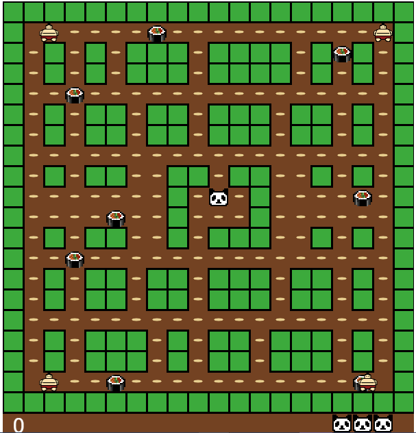
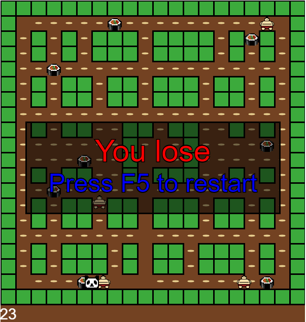
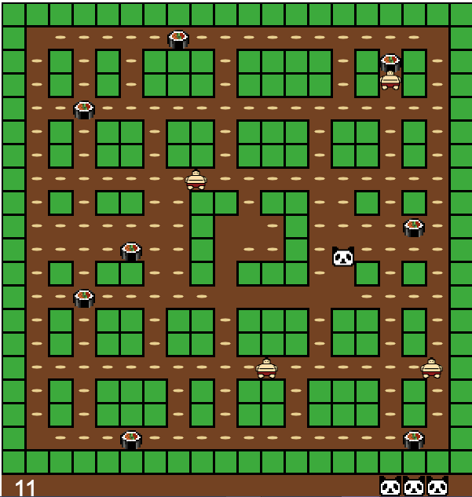
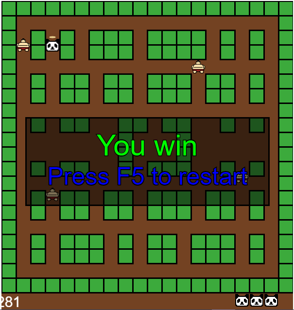

P5.JS
SCREENSHOTS
It's better to see something once than to hear about it thousand times...

START
Once you opened the page with the game - the game started. Two sumoists will begin to hunt for a panda to prevent it from eating all the rice.

LOSE
Once you come across one of the sums- you will lose one life (lower right corner). Be careful, you only have 3 lives.
GAME
Your goal is to eat all the rice and sushi. And most importantly, do not share food with the sumos and prevent them from catching you.

WIN
If you eat all the food, the panda will be full, and the sumos will die. K.O.

DESCRIPTION
Short Story
Pucman is a game based om Pac-Man. Pac-Man is an arcade game developed by Namco and first released in Japan in May 1980. It was created by Japanese video game designer Toru Iwatani. It was licensed for distribution in the United States by Midway Games and released in October 1980. Immensely popular from its original release to the present day, Pac-Man is considered one of the classics of the medium, and an icon of 1980s popular culture. Upon its release, the game—and, subsequently, Pac-Man derivatives—became a social phenomenon that yielded high sales of merchandise and inspired a legacy in other media, such as the Pac-Man animated television series and the top-ten Buckner and Garcia hit single "Pac-Man Fever". Pac-Man was popular in the 1980s and 1990s and is still played in the 2010s.
Developed in
CONTROLS MANUAL
ADDITIONAL INFORMATION
-
Anastasiya Artyomchik Link to github
Link to vk -
Polina Bobrovnik Link to github
Link to vk